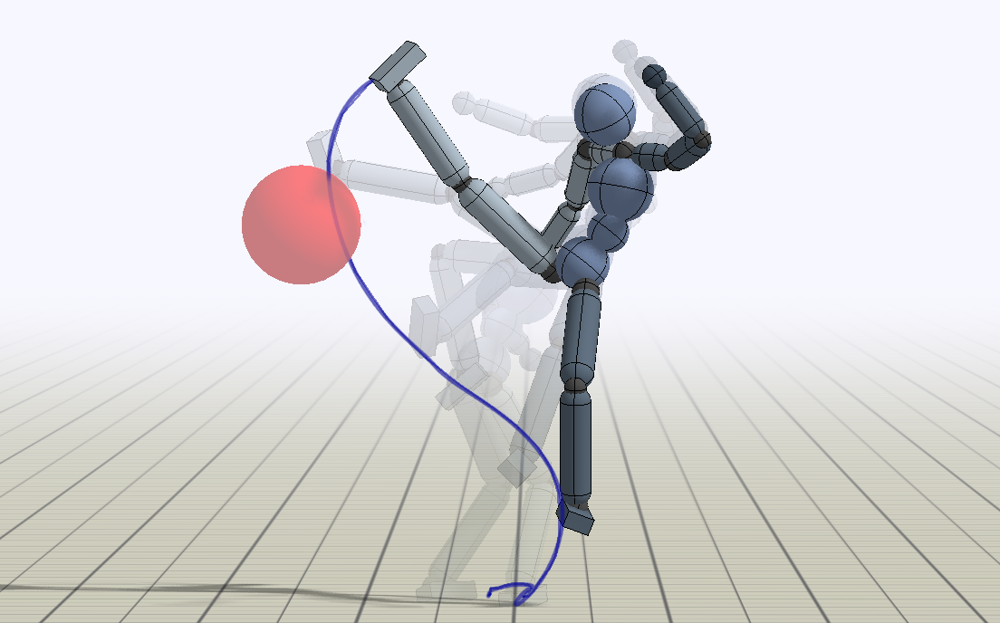

|
|
I'm currently a Ph.D. student at UC Berkeley advised by Professor Sergey Levine and Professor Pieter Abbeel. I recevied an M.Sc from the University of British Columbia, advised by Professor Michiel van de Panne. My work lies in the intersection between computer graphics and machine learning, with a focus on reinforcement learning for motion control of simulated characters. I have previously interned at OpenAI, Adobe Research, Disney Research, Microsoft (343 Industries), and Capcom. |
|  |
ReinforceTuning: Performance Optimization of Lustre File System Based on Reinforcement Learning Zhang Wentao , Wang Lu, Cheng Yaodong HPC China 2018 [Project page] [Paper] |